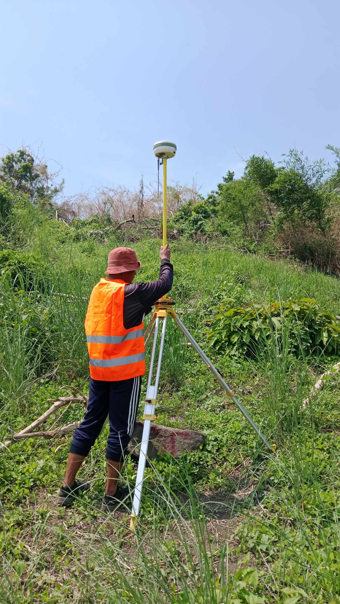
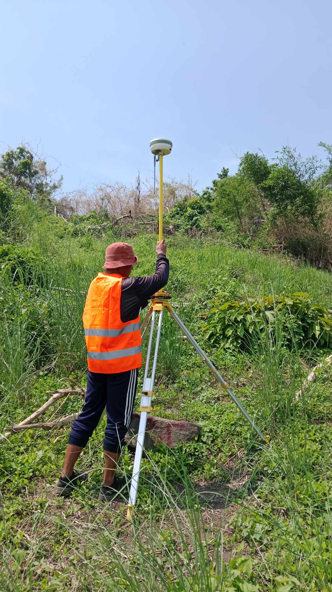

Survey Services
Precision surveying using advanced technology and expert field professionals
Hydrographic Surveys
Precise bathymetric positioning, tidal correction, and integration with terrestrial control for marine engineering and flood-risk assessment.
Aerial Photogrammetry Surveys
Survey-grade imagery with ground control and rigorous georeferencing to produce accurate orthomosaics and photogrammetric 3D models for engineering use.
Aerial LiDAR Surveys
Geodetic LiDAR acquisition and calibration delivering survey-accurate point clouds, georeferenced to project datums for engineering-grade terrain modeling and analysis.


Horizontal and Vertical Control Surveys
GNSS/RTK network establishment, precise leveling, and rigorous adjustment to provide reliable reference frames for surveying and engineering projects.
Topographic Surveys
Accurate capture of terrain elevations and features tied to geodetic control for planning, design, and construction deliverables.

Parcellary Surveys
Precise boundary measurement, legal-boundary coordinate derivation, and plans suitable for registration and title processing.
Isolated Land Surveys Approval
Accurate measurements and deliverables prepared to meet regulatory and municipal requirements.
 
